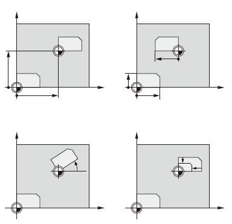
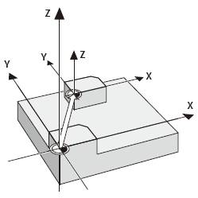
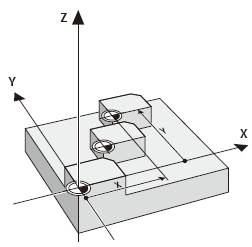
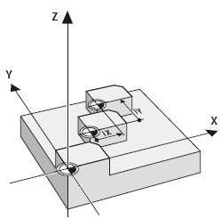
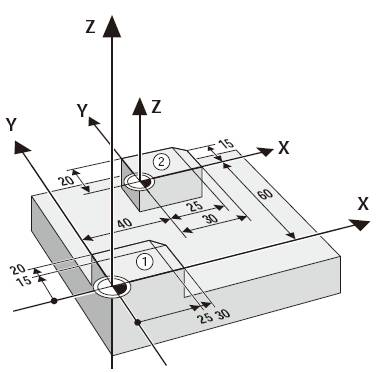
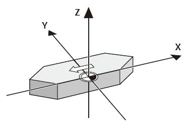
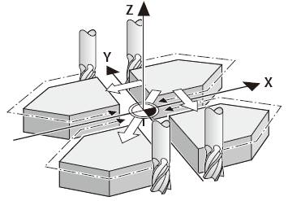
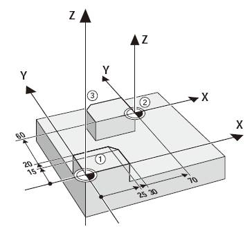
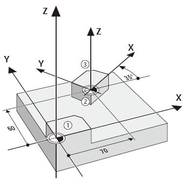
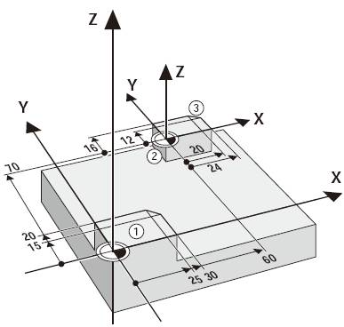

| 坐标变换 |
取消方式：坐标变换可以通过以下方式被取消  （坐标转换） 原点偏移（G54）
 （激活原点偏移） 输入数据 对于原点偏移，需要输入一个新的原点坐标（0点设置），绝对坐标值以手动设置的原点为参考，相对坐标值以上一次设置的有效值为参考。   （原点偏移：绝对） （原点偏移：相对） 取消方式：原点偏移可以通过在坐标设置里面输入X=0、Y=0、Z=0被取消 例子： （原点偏移） 子程序加工程序的顺序被执行两次
 （原点偏移例子图） 主程序： %S840I G71*.......................................................................................程序开头 N10 G30 G17 X+0 Y+0 Z-20*...........................................................定义工件毛坯尺寸 N20 G31 X+100 Y+100 Z+0* N30 G99 T1 L+0 R+4*.......................................................................定义刀具 N40 T1 G17 S1500*...........................................................................调用刀具 N50 G00 G40 G90 Z+100* N60 L1,0*...........................................................................................调用子程序一次原点不偏移 N70 G54 X+40 Y+60* N80 L1,0*...........................................................................................调用子程序一次原点偏移 N90 G54 X+0 Y+0*..............................................................................取消原点偏移 N100 Z+100 M02* N110 G98 L1* . . N230 G98 L0* N99999 %S840I G71* 子程序： 镜像（G28） 结果依据原点的位置  （在轮廓上镜像）  （整个轮廓镜像） 例子：镜像  程序： %S844I G71*.................................................................................程序开头 N10 G30 G17 X+0 Y+0 Z-20*......................................................定义工件毛坯尺寸 N20 G31 X+100 Y+100 Z+0* N30 G99 T1 L+0 R+4*..................................................................定义刀具 N40 T1 G17 S1500*......................................................................调用刀具 N50 G00 G40 G90 Z+100* N60 L1,0*.......................................................................................不镜像 N70 G54 X+70 Y+60*.....................................................................设置原点偏移 N80 G28 X*.....................................................................................激活镜像功能 N90 L1,0*.......................................................................................原点偏移和镜像 N100 G28*........................................................................................取消镜像 N110 G54 X+0 Y+0*........................................................................取消原点偏移 N120 Z+100 M02* N130 G98 L1* . N250 G98 L0* N99999 %S844I G71* 子程序： 旋转（G73） 以参考轴来旋转角度 输入数据  程序： %S846I G71*.................................................................................程序开头 N10 G30 G17 X+0 Y+0 Z-20*......................................................定义工件毛坯尺寸 N20 G31 X+100 Y+100 Z+0* N30 G99 T1 L+0 R+4*..................................................................定义刀具 N40 T1 G17 S1500*......................................................................调用刀具 N50 G00 G40 G90 Z+100* N60 L1,0*.......................................................................................不旋转 N70 G54 X+70 Y+60*.....................................................................设置原点偏移 N80 G73 G90 H+35*.......................................................................激活旋转功能 N90 L1,0*.......................................................................................原点偏移和旋转 N100 G73 G90 H+0*........................................................................取消旋转 N110 G54 X+0 Y+0*........................................................................取消原点偏移 N120 Z+100 M02* N130 G98 L1* . N250 G98 L0* N99999 %S846I G71* 子程序： 缩放（G72） 缩放功能应用于以下几个方面： 输入数据  程序： %S847I G71*.................................................................................程序开头 N10 G30 G17 X+0 Y+0 Z-20*......................................................定义工件毛坯尺寸 N20 G31 X+100 Y+100 Z+0* N30 G99 T1 L+0 R+4*..................................................................定义刀具 N40 T1 G17 S1500*......................................................................调用刀具 N50 G00 G40 G90 Z+100* N60 L1,0*.......................................................................................不缩放，原始尺寸 N70 G54 X+70 Y+60*.....................................................................设置原点偏移 N80 G72 F0.8*................................................................................激活缩放功能 N90 L1,0*.......................................................................................原点偏移和旋转 N100 G72 F1*..................................................................................取消比例缩放 N110 G54 X+0 Y+0*........................................................................取消原点偏移 N120 Z+100 M02* N130 G98 L1* . . N250 G98 L0* N99999 %S847I G71* 子程序：
|